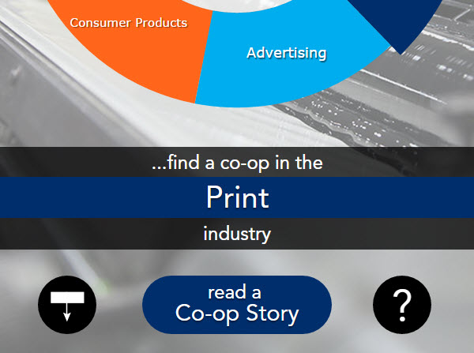

RIT Media Sciences App
Cooperative Education Introduction
Rochester Institute of Technology (RIT) requires students in some majors to participate in cooperative education (full-time employment in a position related to your college major) before they can graduate. Students must apply and be hired by a company, just like a normal job. My major (Media Arts and Technology) requires me to have two ten week terms of cooperative education (co-op) before I graduate.
Over the summer of 2015 I was hired by the School of Media Sciences at RIT, to develop and produce an interactive app with Adobe’s new Digital Publishing Solution (DPS) software.
Starting the App
I started working on this app along with another student in my major; she was the design lead and I was the technical lead. We both had an advisor to supervisor and brainstorm the direction of the app, and we often met with a member of the publication industry working at Adobe.
The Adobe DPS software that we were building in the app was in a prerelease state when we first started; meetings with our Adobe representative allowed us to offer suggestions for software improvements and bug fixes, and keep up on the new features and releases.
My Responsibilities
Part of an interactive graph that shows the perentage of students who have a co-op in different industries.
INTERACTIVE ELEMENTS
The new Adobe DPS transitions away from the typical issue release model of digital publications, by introducing the ability to publish single articles and collections of articles to an app in real time. It also allows HTML articles to be created and published, which allows a new level of customization and interaction within the app.
This project gave me an opportunity to explore and work with many technologies and languages that I am interested in, including JavaScript, D3.js, HTML5, CSS3, Sass, and Node.js. As the technical lead on this project, I was responsible for planning, design, and development of interactive app elements.
Coming into this project I had a basic understanding of JavaScript; however, my advisor and I knew that I would need more experience with JavaScript and using JavaScript libraries to accomplish the level of visual interaction that we wanted with this project. Therefore, I spent a large amount of time at the beginning of this project learning and practicing JavaScript and D3.js (a JavaScript visualization library).
It was a challenge to learn and apply, but it was necessary to have the level of interaction that we wanted in the app. JavaScript and D3.js became the basis for the interactive elements that were designed and developed for this project.
App management and submission
My other major responsibilities for this project were developing, managing, and submitting the actual iOS and Android apps. I learned the workflow and requirements of the new DPS software, and the iOS and Android platforms, to manage the assets, certificates, licenses, and settings that were required to produce and publish the apps.
Challenges
The most time consuming task for me was developing interactive elements for this project so that they would look consistent across devices, and be easily transferable to other interactive articles within the app.
The workflow of developing on a computer, publishing content through an app creation (beta) software, and then having users view the app on a mobile device or tablet was frustrating and cumbersome at times.
Summary
This experience has taught me a great deal about project planning and management, and the importance of establishing an efficient and effective development workflow.
There are always going to be issues in a project, especially one that is based on developing software. As I progressed in the project, and in my understanding of the technologies I was working with, it became easier to address and overcome the challenges that I mention above.
This co-op let me experience the entire lifecycle of a project in a full-time job setting; it was a great opportunity for me to apply and grow the technical skills that I have been acquiring in my major.